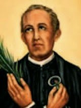

Dionisio Pamplona Polo
Biografia
condicion dentro de la iglesia
legado de Dionisio Pamplona
Bienvenidos
Dionisio Pamplona Polo
Sacerdote escolapio, educador y mártir español, dedicado a la Iglesia y a la educación.
